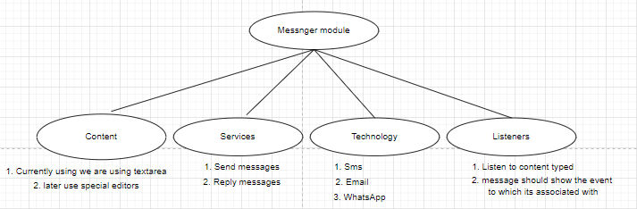
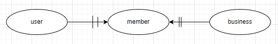

# Kentionary
## Agenda in Kentionary.


Main Objectives

- Support for `effective communication` between different ethnic groups of Kenya 
- Offer `translation` services between ethnic Languages.
- `Dictionary` of words in various languages Kenyan

**Module (Messenger)** 

- Basic communication. 
- Business > Generate data that drives the business.
- Translate a sent message; the recepient can choose the language to be view the message in.
- Online /Real-time dictionary/translation service for the messenger.
- As a writer /user types, the module can detect if the typed word is in the Kentionary dictionary. It highlights the new word

## Session 2 (Feb/17/2022)
 `Kaniu's research.`

Special text editor:
- eg for VS code. -Monaco Editor ESM, AMD
- Libraries ;Slate and Code mirror

**Objectives?** - 
Why Messages on Kentionary?

Basic functions
- Ordinary text Messaging 
- Go over and beyond
	-In the Context of Kentionary it must show the translations, Synonyms etc
	-highlight words not in the dictionary
- Invite people to enter their messages with the messaging application

**Assignments**

1. [x] Divide the Panel into: Event & Message
2. [x] Everyone to incorporate the new grid layout for the home page (Sharon)
3. [x] Demo php mailer after installation (Muraya)
4. [x]  Add outlook option to create message on the message panel (DK)
5. [x] Add a layout feature of CRUD(Sharon)


## Session 3 (Feb/21/2022)

**Discussions**
- We looked at the \config in root config,(each project should have its own namespace). 
- The title tag names your tab in the browser.
- Change folder structure from v\code\pictures to v\images ( pictures shouldn't be in the code folder)
- Outlook option on the private message shouldn't be there.
- System should be able to send private message to the users by using their details; whatsapp, sms, email etc. 
- If it is public you should be able to select the medium to which the message to be send via (whatsApp group, sms)

Kentionary should have the following Interfaces.
- `Private/Public messages`
- `Langauge option`
- Show `Events` related to the message


**Mailer php**

1. Set up settings requred to send 
2. Peter to look at it and understand how to will help in sending mail.
3. Install php mailer after schema n set all the properties/parameters 
4. Theme elass wasn't ready for extension

**Assignments**
1. [x] Lock schema+outlook(Peter)
2. [x] Make sure the config file can be copied to a shared folder(Peter) 
3. [x] Local & Root file have a config dummy file(Peter)
- For easier making of a  new application.(Peter)
5. [x] Change index file to pick the logo(everyone)

## Session 4 (Mar/03/2022)

**Discussions**
- Schema,outlook,merger.
The whole folder structure should be in one repository.

**Assignments**
1. [x] (SW)In the message box have:
- Private message section=have dropdown box to select the receipt.
- Public message section=message to be sent to all media(sms,email,outlook,whatsapp)
- Language option should appear first
2. [x] Refresh the messages panel to see inserted message (DK)
3. [x] Extend the theme panel to display messages(Kamau, with Mr. Muraya assistance)
4. [x] Add an event listeners to alert the last word typed after hitting the spacebar(Kaniu)

## Session 5 (Mar/10/2022)
**Discussion**
1. In the Private section:
- identify the location of your registered users in your system.
- add an entity `member` in the current model

 
**Assignments**
1. [x] Implement resizing in the website layout (FN)

2. [x] Create and demonstrate a simple email class that extends phpmailer and allows the user to specify the minimum input possible eg. sender, subject and email text.(DK)

3. [x] Set up demo to allow sending of sms using twilio or Africa's talking or any other cheap alternative(Pk)

## Session 6 (Mar/17/2022)

**Discussion**

**Listeners**

1. Regular expressions
	- For regular expressions it specifies the pattern of word searched while in normal expressions it just searches for the word.
	- Difference between regular and normal expressions; if you search for a fullstop in regular expression the whole document is higlighted while in normal expressions it highlghts all fullstops in the document.
	- Examples of regular expression:
		- \d  looks for single digits
		- \d\d looks for double digits
		- \w looks for word
 
 **Services**

1. Sending of messages
	- Applications will have a shared group email, create a mutall data gmail address. 
	- Instead of having private communication, someone should target the recepient to send message to.

**Assignments**

**Listeners**

1. Event listeners was added, problem is getting the last word typed using regular expression(DK)
	- Language option; If word is absent in the dictionary it underlines then fires the kentionary process
	- Read on textarea; and see how methods are used for seeing a word highlighted and figure out the word.

**Services**

2. In the message template; have a target option to select an individual you want to send the message to.(SW)

**Technology**

3. Setup a twilio like system, and see how sending of sms can be done using Php on the server side
	- Look what we require to get the module be part of the library(PK)  
	- Look for a service provider with minimum requirements.

## Session 7 (Mar/24/2022)
**Discussion**
- Read on the other regular expressions.
- Have a session where (PM) will demo how to access scripts in the library.

**Assignments**

**Services**

1. (DK) Go through the message template code and add the attributes used to save data in database.

**Technology**

2.  Demo how sending of sms can be done using Php on the server(PK).

## Session 9 (1/4/2022)
